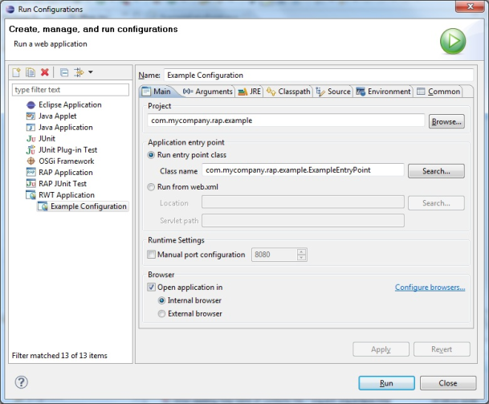
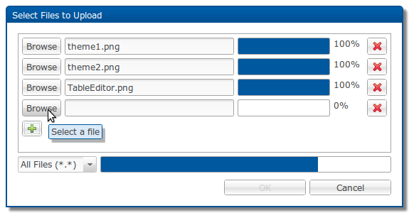

RAP 1.4 - New and Noteworthy
Here's a list of the most noteworthy things that will be available with RAP 1.4 (June 22, 2011).
This list shows all bugs that were fixed for this release so far.
New API added
FontData()constructorFontData#setName(), FontData#setHeight(), FontData#setStyle(), FontData#setLocale()Display#getSystemTray()Tree#getTopItem()Tree#setTopItem( TreeItem )TreeItem#getImage()Tree#getGridLineWidth()Text#setTextChars( char[] )Text#getTextChars()Browser#evaluate( String )Browser#addProgressListener( ProgressListener )Browser#removeProgressListener( ProgressListener )GC#drawText()now supportsSWT.DRAW_MNEMONICstyle flag.CLabel#setBackground( Color[], int[] )Browser#getWebBrowser()Image( Device, int, int )constructorGC#setAdvanced( boolean )andGC#getAdvanced()Display#getAppMenuBar()Display#getSystemTaskBar()Control#getOrientation()andControl#setOrientation( int )Menu#getOrientation()andMenu#setOrientation( int )Menu#getDefaultItem()andMenu#setDefaultItem( MenuItem )Buttonnow supportsSWT.WRAPstyle flag.
New Tree implementation
- Item and cell colors/fonts
- Item height does adapt to font / image size now
- SWT.FULL_SELECTION support
- Gridlines
- Themeable indentation symbols (treelines, expand/collapse icons)
- Improved SWT.VIRTUAL support makes big trees load much faster
Improved iPad/iPhone support
- Fixed layouting bugs.
- Fixed mouseclick emulation.
- Added fullscreen support
- Enabled native drag-and-drop behavior for ScrollBar, Shell, Sash, Scale, Slider, TableColumn anmd TreeColumn.
It is recommended to increase the size for the draggable elements to make them easier to hit with a finger. (See also "New Themeable Scrollbars".) Since this can be done using only theming, its possible to target mobile and desktop clients with the same application, but different themes.
To run a RAP-application can in fullscreen-mode, simply touch the "+", select "Add to Home Screen", and start it from there. Note that pinch-zoom is disabled in fullscreen-mode
CSS3-Support
This also enables basic support for Anroid 2.x devices.
New Default Theme
org.eclipse.rap.rwt.theme.classic.New Default Theme:
Classic Theme:
To activate the classic theme simply add the bundle to an exsiting launch configuration and change the servlet name to "classic". An alternative way to use the classic theme is to create an own branding and set the
themeId to
org.eclipse.rap.rwt.theme.classic.
General Theme Extensions
- It's now possible to style the separator label like:
Label[SEPARATOR] { ... } - The Label has a new themeable element called
Label-SeparatorLine. It's possible to style the background image (gradient), background color, border, border radius and line width.
For example:Label-SeparatorLine { background-image: none; background-color: transparent; border: 1px solid #a4a4a4; border-radius: 0px; width: 2px; } MenuItemhas a new themeable propertybackground-image.- Table border is now themable, but
border-radiusproperty is still not supported. opacityproperty has been added to buttons.- The themability of the
Sashhas been improved.background-imageandbackground-colorproperties have been added toSashelement.:hoverstate is now supported:
- It's now possible to set a background image or gradient for the list
items:
Shadows
- Shell
- Menu
- Widget-ToolTip
- ToolTip
- Combo-List
- CCombo-List
New Themeable Scrollbars
- It looks and behaves the same on every client, regardless what operationg system or window system there is.
- The new scrollbar is fully themeable. This is also another step in our effort to support mobile devices: the scrollbars can be made wider, so that they are easier to use on touch-interface.
- It improves scrolling for Tree and Table by automatically adapting to the clients performance.
FileUpload widget
The widget org.eclipse.rwt.widgets.FileUpload has been introduced.
This is a very basic, button-like component that lets users select a file from their local
file system.
This file can then be programmatically uploaded to a given URL.
To accept and store those files on the server, a server-side component is also needed.
This part is not included in the FileUpload widget itself.
A default implementation is currently being developed in the RAP Incubator and will be made
available soon.
An implementation of the SWT FileDialog, based on the new FileUpload widget, is
also under development in the Incubator.
ToolTip widget
Note: By introducing this new widget we had to rename the existing CSS element
ToolTip to Widget-ToolTip.
This CSS element is used for styling tooltip texts on widgets, as set
using Control#setTooltipText().
The new ToolTip widget can now be styled with the CSS element
ToolTip.
This change was necessary to remain consistent within our naming scheme. Please update your custom themes accordingly.
Optimized client
RAP is now using a new Javascript-compressor (based on the YUI Compressor), and we also refactored/removed a lot of existing Javascript code. These two actions reduced the size of the client from 984 kB to 909 kB.
The client's logging system has been drastically simplified in order to reduce client-size. RWT itself does not use the logging anymore, but a rudimentary implementation is still in place for custom-widget developers. As a result of these changes, the RWT log-levels are no longer supported. When RAP is started in the Debug variant, all log-messages are sent to the Browsers Javascript-console, while the Standard (production) variant will not output any logging messages.
JQuery compatibility
Application Scope
Applications that wish to leverage this should no longer use static fields to store instances with application scope. Instead they should make use of the new
IApplicationStore.
Note: for applications using the workbench, these changes don't make a difference as multiple workbench applications cannot be run in parallel in a single virtual machine.
Response Content Compression
If you wish to use content compression, please make sure that the servlet container that you deploy the RAP application into, is configured accordingly. Learn here how to enable content compression for Jetty and Tomcat.
Key Bindings
Display#setData() with the new constant RWT.ACTIVE_KEYS.
The resulting key events can then be handled, just like in SWT, by adding a global key event listener to the display using
Display.addFilter().
For details, please refer to the JavaDoc of RWT.ACTIVE_KEYS. See also "KeyBindings" in category JFace / Workbench
AdapterFactory changed scope
org.eclipse.rwt.AdapterFactory changed its scope. Until now, it had
so called session scope. Each session had its own instance of a registered
AdapterFactory. Now, the AdapterFactories live in application scope, meaning
that there is exactly one instance of every registered AdapterFactory type.
Only those applications that register their own implementations of
AdapterFactory are affected by this change.
The AdapterFactories used by RWT internally have been adapted to this change.
For the reasons that led to this change, please see
bug 342302: Move
AdapterFactory into application scope.
We apologize for any inconveniences this may cause.
JFace and Workbench upgraded to 3.7
IApplication support
KeyBindings
 Emacs key sequences are not supported and the
Emacs key sequences are not supported and the
emacsAcceleratorConfiguration scheme is missing.See also "Key Bindings" in category RWT
Tooltips for TreeViewer
TreeViewer now supports tooltips for its content too.
It can be activated by calling
ColumnViewerToolTipSupport#enableFor().
Afterwards you need to override
CellLabelProvider#getToolTipText(Object) and have it
return the respective tooltip text. Other tooltip-related methods
(getToolTipBackgroundColor, etc.) are not supported.

Servlet 3.0 Support
javax.servlet.*) 3.0, RAP is now able to leverage the new
Servlet specification. Deploying RAP on application servers like
Tomcat 7 or
Glassfish 3.
is now possible.
New Bundles included
- org.eclipse.equinox.servletbridge
- org.eclipse.equinox.servletbridge.extensionbundle
- org.eclipse.equinox.http.servletbridge
IApplication support
RAP Launcher

You can now configure the location of the Instance Area in the launcher's Main tab. The instance area is the OSGi data location, where all bundles of the running application can store their state information. This includes resources that are used by the RAP server, such as images, but also the setting store. By selecting the option Clear the instance area before launching, you can ensure that all these resources are cleared when you re-start a RAP application.
You can now specify a Context Path in the launcher.
The context path is an optional additional path segment that enables you to launch your
application with a URL similar to your real deployment environment.
As an example, when you deploy an application named myapp on tomcat, it will usually be
accessible under an URL like http://server:port/myapp/myservletname,
where myapp is the webapp, and myservletname is the servlet name you choose in the branding.
As you can see from the screenshot, the launcher will now display a preview of the URL that your application will be accessible at in the Browser group box.
Moreover, servlet names, entry points and applications can be selected not only from the workspace but also from the active target platform.
The serlvet name, entry point or application is now validated against the selected bundles. The launcher shows an error, if the bundle that provides the selected name is not contained in any of the selected bundles.
RWT Application Launcher
 To run an RWT application, select a class (e.g. in the editor or package explorer) that implements
IEntryPoint and hit Alt+Shift+X 3 (please feel free to
file a bug
if you find a more suitable shortcut that is not yet taken by another launch configuration).
You can also launch an RWT application by selecting a project instead of a class file. You
will be prompted to select a class from those classes that define an entry point.
Besides launching RWT applications, it can also be used to run arbitrary web applications, provided that there is a deployment descriptor (
web.xml).
Target installation
FileDialog
To make file uploads really simple, we also provide an implementation of the SWT FileDialog in the RAP Incubator. This FileDialog allows you to select and upload files and makes the uploaded files available on the server.  You can include the dialog and its dependencies in your target platform by adding the new Incubator Software Site http://download.eclipse.org/rt/rap/1.4/incubator/ to your RAP 1.4 target.